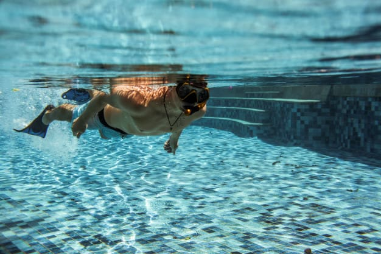

ကြောက်စိတ်တွေကို ကျော်လွှားပြီး ရေကူးသင်ကြမယ်

ခုဆို ပိတ်ရက်တွေကလည်းများ ခရီးသွားမယ်ဆိုရင်လည်း သူငယ်ချင်းတွေက ကမ်းခြေသွားမယ်ဆိုရင် ကိုယ်က အဖွဲ့ထဲက ရေကူးရမှာကြောက်တဲ့သူ၊ ရေမကူးတတ်တဲ့သူဖြစ်နေတယ်ဆိုရင် ပင်လယ်ပြင်ကိုသွားတဲ့ခရီးတွေမှာဆို ပင်လယ်ပျော်တွေကြားထဲမှာ ကိုယ်ကမျက်နှာငယ်ရမှာပါ။ သူများတွေက ရေငုပ်တယ်၊ ရေအောက်အလှတွေကိုလည်း ခံစားတယ်၊ ပင်လယ်ပြင်ထဲမှာ ရေကူးတယ်၊ ကိုယ်ကတော့ ရေအနက်ကိုကြောက်ပြီး ရေတိမ်မှာပဲနေတယ် ဓာတ်ပုံရိုက်ရုံလောက်နဲ့ဆိုရင်တော့ ကမ်းခြေခရီးဟာ အဓိပ္ပါယ်ရှိမှာမဟုတ်ပါဘူး။
ဒီဆောင်ပါးလေးမှာတော့ ရေကိုအရမ်းကြောက်တတ်တဲ့သူတွေအတွက်မဟုတ်ဘဲ ရေကူးသင်ရမှာ၊ ရေနက်ထဲ ရေကူးရမှာကြောက်တဲ့သူတွေအတွက် အဲ့ဒီစိတ်တွေကို ဘယ်လိုကျော်လွှားမယ်ဆိုတာကို ပြောပြပေးသွားမှာဖြစ်ပါတယ်။
၁။ အတွေးမလွန်ပါနဲ့။
ရေကူးရမှာကြောက်တတ်တဲ့သူအများစုက အတွေးတွေလွန်နေကြလို့ပါ။ ရေထဲမဆင်းခင် ခေါင်းထဲမှာ ဘာမှမတွေးပါနဲ့။ အရင်ဆုံး ကိုယ်ကြိုက်တဲ့ ကိုယ့်ခန္ဓာကိုယ်နဲ့ အချိုးကျကျ လိုက်ဖက်မယ့် ရေကူးအင်္ကျီကို ဝယ်ဝတ်ပါ။ ကိုယ့်ကိုယ်ကို လှလှပပနဲ့ ယုံကြည်မှုရှိနေရင် တခြားကြောက်စိတ်တွေနဲ့ အတွေးလွန်တာတွေကို လျော့စေပါတယ်။
၂။ ပတ်ဝန်းကျင်နဲ့ ရင်းနှီးပါစေ။
ရေကူးသင်တော့မယ်ဆိုရင် ကိုယ်ကူးမယ့်ရေကန်ကို ရင်းနှီးအောင်လုပ်ပါ။ ကားမောင်းစသင်တဲ့ချိန်မှာ ကိုယ်မောင်းမယ့်လမ်းကို သေချာသိအောင်လုပ်သလိုပေါ့။ ကိုယ့်ရေကူးကန်မှာ နည်းပြတွေရှိလား၊ ကိုင်လို့ရမယ့်တန်းတွေရှိလား၊ ကယ်ဆယ်ရေးကိရိယာတွေရှိလား၊ မိန်းကလေး၊ ယောကျာ်းလေးခွဲထားလား စသဖြင့် သိထားရင် စိုးရိမ်ပူပန်နေတဲ့ ကိုယ့်ရဲ့စိတ်ကို အနည်းနဲ့ အများ သက်သာရာရစေပါတယ်။
၃။ ရေထဲကို ဖြည်းဖြည်းချင်းဆင်းပါ။
တစ်ကိုယ်လုံး ရေကန်ထဲမရောက်ခင် ခြေထောက်ကိုအရင် ရေစိမ်ပြီး ရေအပူချိန်ကို ကျင့်သားရအောင်လုပ်ပါ။ အများအားဖြင့် ရေကူးကန်ထဲက ရေက အေးနေတတ်ပါတယ်။ အေးနေတဲ့ ရေထဲကို ရုတ်တရက်စိမ်ပြီး လန့်သွားရင်လည်း ကြောက်စိတ်နဲ့ လန့်သွားတာနဲ့ပေါင်းပြီး စိုးရိမ်စိတ်ကိုပိုဆိုးစေပါတယ်။ ရေတိမ်ထဲကို စဆင်းပါ။ တတ်ချင်စိတ်နဲ့ ဇွတ်မဆင်းသွားပါနဲ့နော်။
၄။ စိတ်ကိုဖြေလျော့လိုက်ပါ။
ရေကူးရမှာကြောက်တဲ့သူတွေရဲ့ စိတ်ရဲ့ နောက်ကွယ်က ရေနစ်မှာစိုးရိမ်တဲ့စိတ်ပါ။ ဒါကလည်း လူတိုင်းမှာရှိတဲ့ ရှင်သန်ဖို့လိုအပ်တဲ့ ပင်ကိုသိစိတ်ပါ။ ရေထဲရောက်တဲ့ချိန်မှာ စိတ်ကြီးကိုတင်းထားပြီး စိုးရိမ်စိတ်တွေများနေရင် ကိုယ်ခန္ဓာက ကြွက်သားတွေကလည်း တောင့်တင်းနေပါလိမ့်မယ်။ ရေထဲကပင့်အားကြောင့် ခန္ဓာကိုယ်က သူ့အလိုလို ရေထဲမှာ ပေါ်နိုင်စွမ်းရှိပါတယ်။ ရေနစ်သွားတဲ့သူအများစုက ရေထဲကျသွားတဲ့အခါ ကြောက်အားလန့်အားနဲ့ အတင်းရုန်းကန်တဲ့အတွက် အဆုတ်ထဲကိုရေဝင်ပြီး နစ်မြှုပ်ရတာပါ။ ။ ဒါကြောင့် စိတ်ကို ဖြေလျော့ပြီး ခန္ဓာကိုယ်ကို အလိုက်အသင့်လေးနေပြီး ရေကူးနည်းပြ ပြောတဲ့အတိုင်း လိုက်နာရင် ကြောက်စိတ်တွေပါ ပြေလျော့ပြီး ရေထဲမှာ နေရတာ၊ အသက်ရှူရတာ လွယ်ကူလာတာကို တွေ့ရပါလိမ့်မယ်။
ရေကူးတတ်သင့်တယ် ဆိုတာလည်း အပျော်ခရီးသွားဖို့သက်သက်တင်မဟုတ်ပါဘူး။ ရေကူးတာဟာ ကိုယ့်အသက်အန္တရာယ်ကိုပါ ကယ်တင်နိုင်တဲ့ အားကစားနည်းဖြစ်ပါတယ်။ နောက်ပြီး ရေကူးအားကစားရဲ့ ကျန်းမာရေးကောင်းကျိုးတွေကလည်း အများကြီးရှိသေးတာကြောင့် ကြောက်စိတ်လေးတွေကို ကျော်လွှားရင်း ရေကူးသင်ကြဖို့ တိုက်တွန်းလိုက်ရပါတယ်နော်။
Source- Dr. Yee Mon Lwin